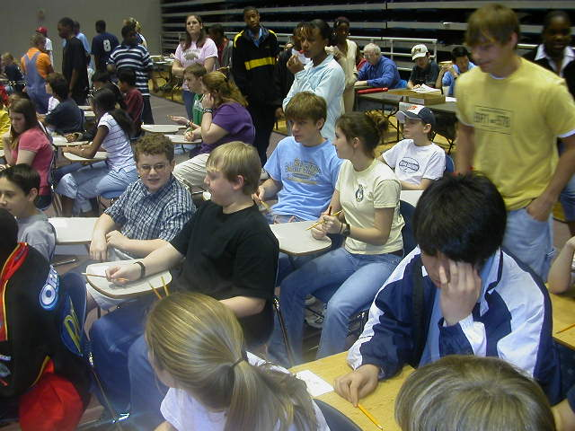
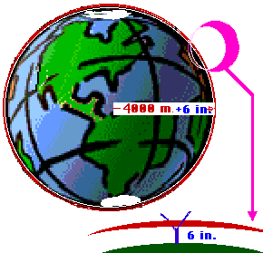

| GSU Top Twenty Cam Randall Brian White Andrew McLean Tyler Melton Jay Brunson Julie Stalcup Jake Bland Brett Reichard Jessie Mooney |
|
||||
| GSU 1st Place Team Cam Randall (3) Brian White (5) Andrew McLean (7) Tyler Melton (9) Jay Brunson (10) |
|||||
| GSU Fourth Place Team Jessie Mooney Jake Bland Brett Reichard Josh Pollack |
GSU Seventh Place Team Tyler Melton Julie Stalcup Merideth Hine Joe Dehnert | ||||
|  | |||||
|
Note that you can add once and then multiply once or you can multiply twice and then add once. Example 2 : 
Example 3 : Suppose a Bulloch county farming family wanted to triple their stock. They presently have 4 goats and 5 cows. How many will they have after tripling their stock? 3 ( 4G + 5C ) = 3(4G) + 3(5C) = (3.4)G + (3.5) = 12G + 15C |
|
|
|
|
| Girl, boy, nor machine can multiply 3 numbers
at the same time. Thus we need the associative law to tell us that it
doesn't matter which two we choose first. What other law may we need to
prove this?
|
|
 |
|
 |
Find the length of the rope needed to lasso the world.
Remember that Circumference = P * Diameter
Calculate the volume of the world. |
|  | If you went clear around the world, raising the rope 6 inches off the surface of the world, how much additional rope would you need? |